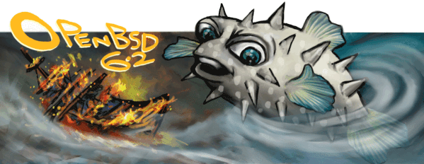

6. What is OpenBSD? [OpenBSD]¶
| [OpenBSD] | http://www.openbsd.org/ |
在OpenBSD的项目产生了免费提供的，基于4.4BSD的多平台的类UNIX操作系统。我们的目标强调正确性，安全性，标准化和便携性。
OpenBSD Project Goals 很明显，每个开发OpenBSD的开发人员都有自己的目标和优先级，但是可以对我们共享的目标进行分类：
提供最佳的开发平台。 为开发人员和用户提供完整的源代码访问权限，包括直接查看CVS树更改的能力。用户甚至可以查看我们的源代码树并直接在网络上进行更改 ！
从与任何集成好的代码上可接受的许可证。ISC或伯克利风格的许可证是首选，添加新代码时GPL不可接受，NDA永远不可接受。我们希望提供任何人都可以用于任何目的的源代码，没有任何限制。 我们努力使我们的软件健壮和安全，并鼓励公司使用他们想要的任何部分。 有OpenBSD的商业副产品。
注意安全问题并在别人之前解决它们。（努力成为最安全的操作系统。）
加密软件的更大集成。 OpenBSD是由加拿大开发和发布的，由于加拿大法律的规定，将加密输出到世界是合法的（正如 加拿大个人研究的和加拿大 出口控制列表所 记录的那样） 。 跟踪和实施标准（ANSI，POSIX，X / Open的部分等）
研究一个非常独立于机器的源代码树。 尽可能多地支持不同的系统和硬件。
尽可能无政治; 应根据技术的优点决定解决方案。
专注于以各种方式成为面向开发人员的开发人员，其中包括举办名为hackathons的仅限开发者活动。
不要让严重的问题没有解决。
大约每六个月发布一次。